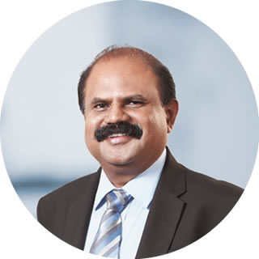
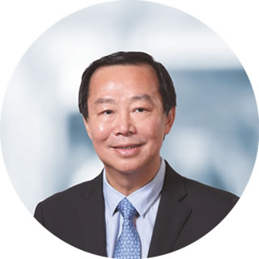
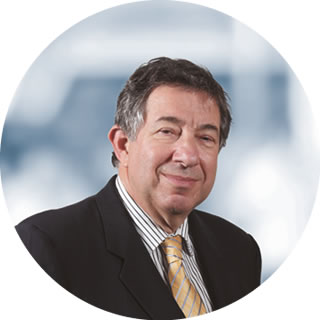
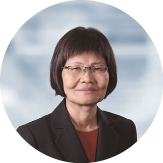
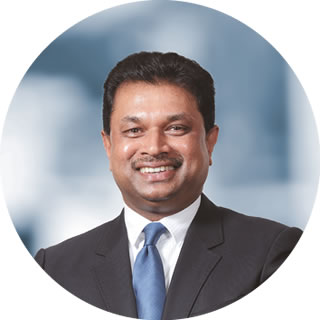

Board of Directors

Mr P G Kumarasinghe Sirisena
Chairman
Mr Kumarasinghe Sirisena was appointed to the Board as an Independent Non-Executive Director and Chairman of the Board on 23 January 2015. He also serves as Director/Chairman of Mobitel (Private) Limited, eChanneling PLC, SLT Digital Services (Private) Limited, SLT Visioncom (Private) Limited, SLT Human Capital Solutions (Private) Limited, Sky Network (Private) Limited, SLT Property Management (Private) Limited, Sri Lanka Telecom (Services) Limited, SLT Campus (Private) Limited, and Director of Galle Submarine Cable Depot (Private) Limited as well. He also serves as a member of the Remuneration and Nomination Committee and the Executive Committee of the Board.
Mr Kumarasinghe Sirisena holds a BSc Honours (Special) Degree in Management from the University of Sri Jayewardenepura. In addition, he holds an MBA from the University of Wayamba and a Master of Public Management from the Sri Lanka Institute of Development Administration. He is a Postgraduate Diploma holder in accountancy, financial management, project management from the University of Sri Jayewardenepura. He also holds a Diploma in Business Management from the National Institute of Business Management. Mr Kumarasinghe Sirisena counts over 25 years of experience in general management, financial management, and human resource management both in private and government sectors.
In addition, Mr Kumarasinghe Sirisena is a Fellow of the Chartered Institute of Marketing (FCIM – CIM), Institute of Certified Professional Managers (FCPM – CPM), Institute of Government Accounts and Finance (IOGAF), Association of Accounting Technicians of Sri Lanka (FAAT), and the Association of Public Finance Accountants of Sri Lanka – the public sector wing of CA Sri Lanka (APFA). He is a certified member of the Sri Lanka Institute of Marketing (CM – SLIM), member of the Sri Lanka Institute of Directors (M – SLID), honorary member of Institute of Personnel Management of Sri Lanka (HM – IPM), and an associate member of Association of FIR Professionals of Sri Lanka (AM – HRP).
Mr Kumarasinghe Sirisena was the Managing Director of State Development and Construction Corporation and CEO/General Manager of State Timber Corporation. He has also served as a Board Director of Mahaweli Engineering Services Limited and the Sri Lanka Land Reclamation and Development Corporation. He currently serves as a Director of the Land Reclamation and Development Company Limited (REDECO), L R D C Services (Private) Limited and as the Financial Consultant of the Araliya Group of Companies.

Mr Chan Chee Beng
Director
Mr Chan Chee Beng was appointed to the Board as a Non-Executive Director on 5 June 2008 and subsequently to the Board of Mobitel (Private) Limited, SLT Property Management (Private) Limited, and SLT Campus (Private) Limited. He also serves as the Chairman of Remuneration and Nomination Committee and a member of the Executive Committee of the Board.
He possesses over 39 years of experience in investment banking, general and financial management and accounting. He worked at Ernst & Young and Morgan Grenfell & Company Limited prior to joining the Usaha Tegas Sdn Bhd (“UTSB”) Group in 1992 as head of corporate finance. He serves on the Boards of several companies including Bumi Armada Berhad, Binariang GSM Sdn Bhd, Maxis Communications Berhad of Malaysia, and Yu Cai Foundation.
Mr Chan holds an honours degree in Economics and Accounting from the University of Newcastle-upon-Tyne, United Kingdom, and is a fellow of the Institute of Chartered Accountants of England and Wales.

Mr Lawrence Paratz
Director
Mr Lawrence Paratz was appointed to the Board of Sri Lanka Telecom PLC as an Independent Non-Executive Director with effect from 26 May 2010. Mr Lawrence Paratz holds an MSc (Telecommunication Systems) with Distinction, and was awarded the Philips Prize from Essex University, and an MEng Sc from the University of Queensland.
He is a Fellow of Engineers Australia (FIEAust) and an alumnus of the Stanford University Executive Development Programme. He also holds Bachelor's Degrees in Science and Engineering (Honours). In 2011, he was elected as a Fellow of the Australian Academy of Technological Sciences and Engineering (ATSE).
Mr Paratz has more than 30 years experience in all facets of the telecommunication industries including mobile, fixed, broadband, satellite, and international networks both domestic and international. This includes capital and infrastructure development, operations, sales, customer service, and regulatory issues. As a Director and Chief Executive of Acacia Australia (Private) Limited, he was responsible for development of an integrated proposal for delivery of national broadband communication for Australia.
He has served as a Director of Maxis Communication Berhad, Chairman of the Technology Committee of the Board, as a Director of Vernet (Private) Limited, a company providing ultra high speed broadband to Universities and Research Establishments in Australia, and a former Senior Executive of Telstra Corporation. He is a Director of Mobitel (Pvt) Limited, e-channelling PLC, Sky Networks (Private) Limited, SLT Property Management (Private) Limited, SLT Campus (Private) Limited, Sri Lanka Telecom (Services) Limited, SLT Visioncom (Private) Limited, and SLT Digital Services (Private) Limited. He is also a Director of Real Thing Entertainment (Private) Limited, an Australian high technology company and Razorback (Private) Limited, a company incorporated in Victoria, Australia. Mr Paratz serves as the Chairman of the Technology Subcommittee and is a member of the Senior Tender Board, Remuneration and Nomination Committee and the Executive Committee of the Board.
Mr Paratz has had executive responsibility for multi- billion dollar programmes and integrations including network transformations and deployments across multiple technologies, with extensive experience in international, metropolitan and regional and rural communications. He previously served as a member of the Board of the Australian Government's Internet Assistance Programme. He has been an invited speaker at the Australian Health Informatics Conference, and the Australian Academy of Technological Sciences and Engineering.
He was formerly Chairman of the On-Trac@Peter Mac Adolescent and Young Adult Cancer Programme, and has been involved in a number of initiatives in e-health.

Ms Lai Choon Foong
Director
Ms Lai was appointed to the Board of SLT and Mobitel (Private) Limited on 9 May 2014 as an Independent Non-Executive Director. She is the Chairperson of the Audit Committee and Senior Tender Board. She is also a member of the Related Party Transactions Review Committee and the Executive Committee.
She has over 35 years of experience in finance, procurement and auditing in-telecommunications, banking, and Government sector. She was previously with Maxis Berhad and is currently the Finance Head of Maxis Communications Berhad.
Ms Lai holds a Bachelor of Commerce Degree from Melbourne University, Australia, a Chartered Accountant of the Malaysian Institute of Accountants, and a Certified Practising Accountant of CPA Australia.
Ms Nilanthi Pieris
Director
Ms Pieris was appointed to the Board on 3 February 2015 as an Independent Non-Executive Director. She is the Chairperson of the Related Party Transactions Review Committee and also sits on the Audit Committee and the Senior Tender Board. She serves as a Director of SLT Human Capital Solutions (Private) Limited as well.
Ms. Pieris is an Attorney-at-Law of the Supreme Court of Sri Lanka and counts over 30 years of experience including 30 years of practice at the Bar. At present, she serves as a Partner of Paul Ratnayeke Associates. She has held several positions at the Bar Association, including the post of Assistant Secretary.

Mr W K H Wegapitiya
Director
Mr Wegapitiya was appointed to the Board on 2 December 2015 as an Independent Non-Executive Director. He is a member of the Technology Subcommittee. He also serves on the Board of SLT Campus (Pvt) Ltd.
He is an award winning entrepreneur, who has gained local and international recognition. Mr Wegapitiya is the founder of “Laugfs”, a highly diversified business conglomerate with overseas operations. Mr Wegapitiya held many eminent positions in Government and Non-Government Institutions on voluntary basis. He was the past Chairman of Chamber of Young Lankan Entrepreneurs (COYLE), Senior Vice President and Executive Council member of Federation of Chamber of Industry and Commerce of Sri Lanka (FCCISL), former Executive Council member of the Ceylon Chamber of Commerce. He served as a member of the National Pay Commission for several years and also as a council member of the University of Sri Jayewardenepura.
Mr Wegapitiya holds a BSc in Business Administration from University of Sri Jayewardenepura and an MBA from the Postgraduate Institute of Management (PIM) affiliated to the same University. At present he is reading for his PhD in entrepreneurship at the PIM.
Mr Wegapitiya was awarded the lifetime honourable title of “Deshabandu” for his valuable contribution to the nations development and entrepreneurial efforts. Also, he recently won the Entrepreneur of the Year 2017 at the ACES Awards.

Mr A R Desapriya
Director
Mr Desapriya was appointed to the Board on 3 October 2017 as a Non-Executive Director. He is also a member of the Audit Committee, Related Party Transactions Review Committee, and the Executive Committee of the Board.
He has 30 years of work experience in the public sector. During which, period he worked in different areas of the public sector activities and held various positions of the General Treasury in the capacity of Director, Additional Director General, and Director General. Mr Desapriya is now a special grade officer of the Sri Lanka Administrative Service (SLAS).
He also serves as a member on the Board of the Insurance Regulatory Commission of Sri Lanka, Director to the Board of Regional Development Bank, and a member of the Welfare Benefits Board. Mr. Desapriya has a BSc Degree in Public Administration from the University of Sri Jayewardenepura, Sri Lanka and an MBA from University of Lublijana, Slovenia.
Mr Mahesh Athukorale
Company Secretary
Mr Mahesh Athukorale is an Attorney-at-Law. He holds an MBA from the University of Colombo, and a Bachelor Degree of Law from the Open University of Sri Lanka. He is an Associate member of the Institute of Chartered Secretaries and Administrators of UK.
In his career spanning over 20 years he has 13 years of experience in the SLT Group and seven years in the mercantile and financial sector.
He also functions as Company Secretary for Board Subcommittees and subsidiaries of SLT Group.